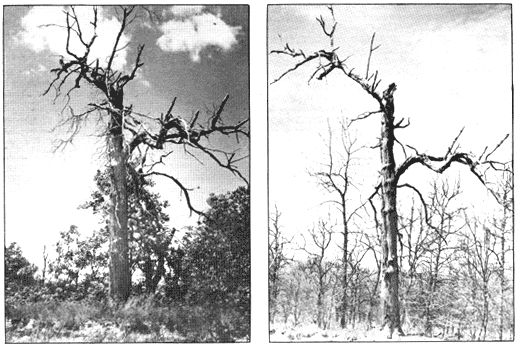
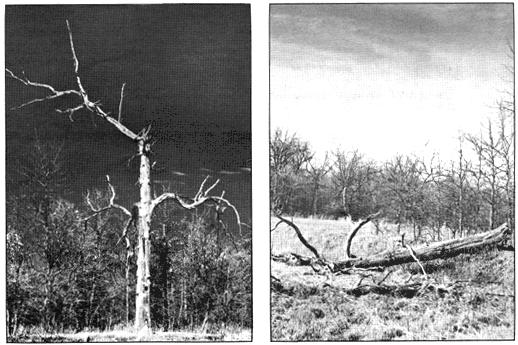

More than twenty-five years ago I passed this white oak in the bottomlands of an Illinois creek. A grass fire had singed it, and the tree had died. Already some of the smaller branches were falling, although the trunk was still dry and solid. Lumbermen, for some reason, had passed up the oak even though-at this stage-it remained valuable to a logger.
Five years later I chanced by the spot again. The old tree was still on its feet but its trunk was nearly denuded of bark and most of the smaller limbs were gone. I tested the oak: Rotting had started to penetrate the sap of its trunk but the ruggedness of the old tree was impressive. Life had left it possibly seven or eight years before . . . yet it still withstood the buffeting of storms and the elements.
Time rolled by and I didn't get back to the tree. I presumed it was long down.
Then one day, fifteen years after I'd taken the second photo, I had a chance to make another check. I was truly surprised. Remarkable as it seems, the white oak was still standing.
The rotting process was very evident at that point; woodpeckers had bored into the tree's trunk and the old oak had the look of a defeated warrior. I was positive that it would fall within weeks.
But it didn't. Months later a friend who hunted in the area assured me that the tree was still standing.
Another year passed. The oak was still there.
But this spring, when I went back to the area, the tree had fallen . . . and even though it had broken up in its ride to earth, the trunk was intact. I dug into that trunk with an axe and found its center still sound, hard and brittle.
The white oak's age, from a leaflet in the forest mould, to its death?
I'm not sure. No doubt the tree was approaching the century mark when the fire killed it. From death to its fall, thirty-two years had elapsed.
That old white oak was tough.
|
 |
 |
|